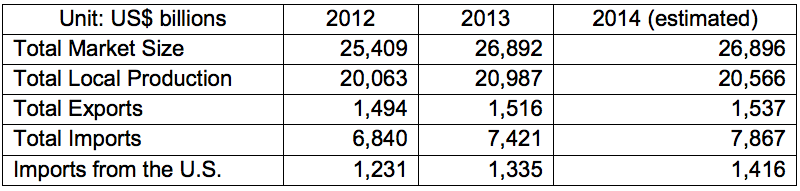

Total Market Size = US$26.892 billion
Data Sources: Sindusfarma
Total Local Production: US$20.987 billion
Total Exports: US$1.516 billion
Total Imports: US$7.421 billion
Imports from U.S.: U$1.335 billion
The Brazilian pharmaceutical industry is comprised of 540 local and international companies established in the country, representing total market value of approximately US$ 27 billion in 2013 and with an annual growth rate of 15%. Brazil is among the five largest pharmaceutical markets in the world in terms of unit sales, and the 8th largest market size. According to Brazil’s Pharmaceutical Industry Syndicate (SINDUSFARMA), Brazilian pharmaceutical product imports in 2013 reached US$7.42 billion, an 8.5 % increase over the previous year's level. US exports account for approximately 18% of Brazilian pharmaceutical imports.
About 80% of pharmaceutical companies operating in Brazil are national. However, they are only responsible for a minority of domestic sales. Foreign firms and their Brazilian subsidiaries, mostly from the United States and Europe, supply 70% of the market. This does not include direct sales to the Government of Brazil (GOB).
Taxes applied to medicines in Brazil are among the highest in the world. The GOB collects over US$ 1 billion in taxes from the pharmaceutical sector. The cascading tax method applied to manufactured goods in Brazil affects several industries, and is one of the most important topics that private industry has raised with the government. However, the process aimed at reducing taxes on pharmaceutical production remains slow and bureaucratic. According to government statements, taxes applied on pharmaceutical products are expected to decrease in order to make drugs more affordable for the population, although this applies primarily to state rather than federal taxes.
Generic Pharmaceutical Products
Currently, pharmaceutical patents are granted for a period of 11 years. U.S. firms seeking to enter the Brazilian market should be aware that the local generic drug market is growing rapidly. Generic drugs first entered the Brazilian market in 1999. Currently, generic drugs account for 25.6% of sales. Nearly all generic production is purchased by state public health care systems as part of the government’s program to distribute medicines to the country’s poorest citizens.